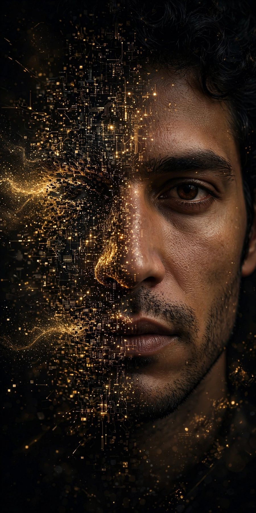

Research Triangle Park · NC
Pas de fantasme, pas de rêve. Juste la réalité — avec des reçus.
Cliquez pour entrer
→
▶ I Am the Singularity — cRUSH
EN
 Research Triangle Park · NC
Research Triangle Park · NC
Research Triangle Park · NC
Research Triangle Park · NC